EP2 定稿畫面（最新）
每個位置放 分鏡表（最新） 上定稿的那張，照劇情順序排，跟成品 ep2_v2.mp4 一致。131 格、140 張圖＋1 個剪輯效果。
第 0 段（S00）
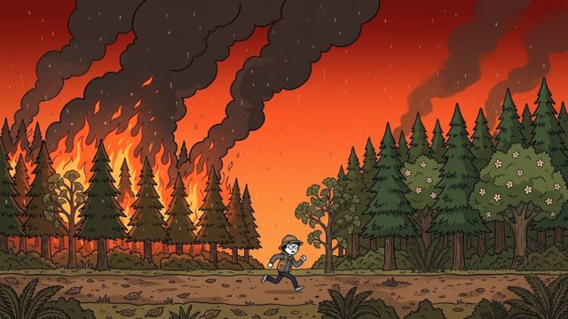
此時此刻，你正在跑。

而你前面那隻甲龍，正帶著你的背包。
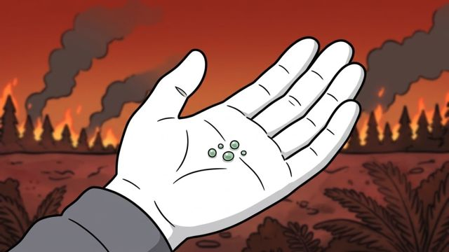
至於天上掉下來的，是一顆顆小玻璃珠。
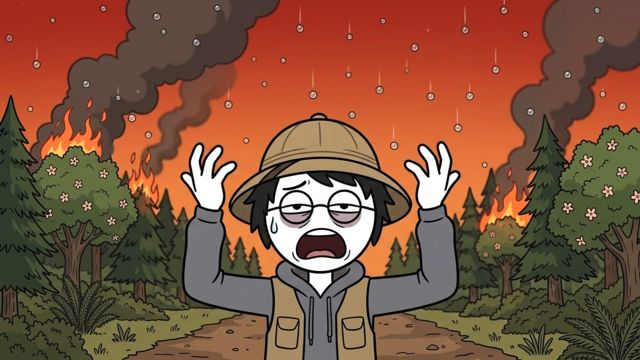
這時候你一定很想問：我只是回來拿個背包，怎麼會變成這樣？
畫面快速倒帶，轉成黑畫面
第 1 段（S01）
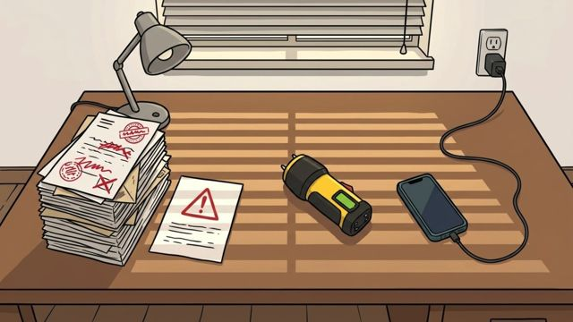
先把時間倒回去一點。你的書桌上，帳單又多了幾張。
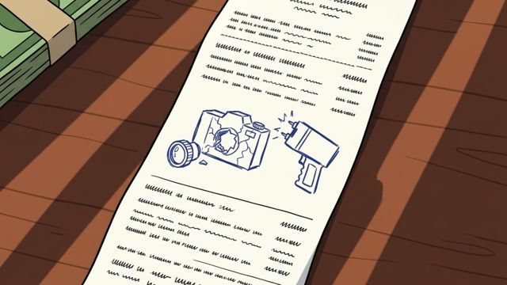
帳單旁邊，還有一張博士給的收據，上面畫著一台壞掉的相機。
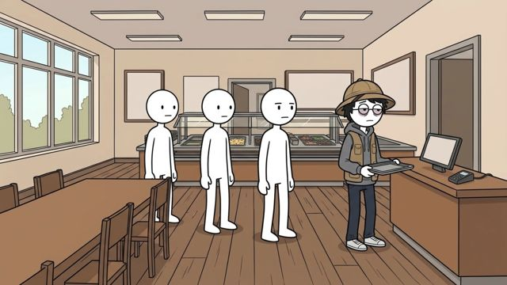
到了中午，你到學校餐廳排隊。
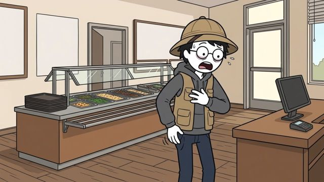
結果輪到你的時候，才發現學生證不見了。
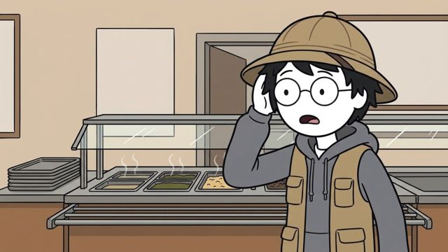
這時你才想起來，它在你的背包裡。
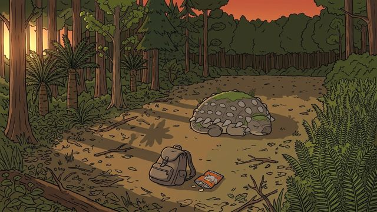
而你的背包，還躺在三天前的白堊紀。
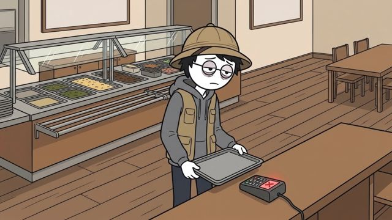
就這樣，沒了學生證，你連學校餐廳的飯都吃不到。
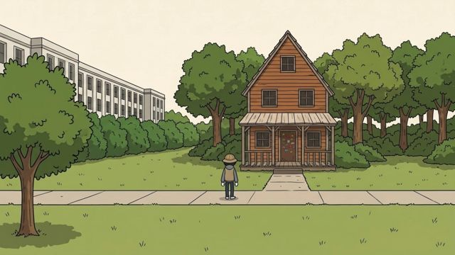
所以你只好去找博士，想借時光機。
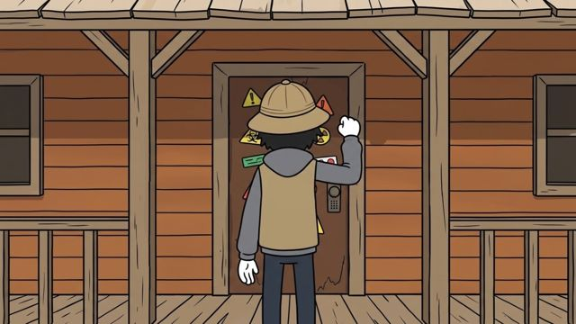
（沒有旁白）
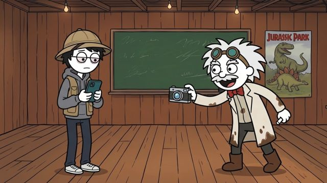
博士一聽，眼睛都亮了，說：可以啊，不過你要順便幫我拍一張照片。
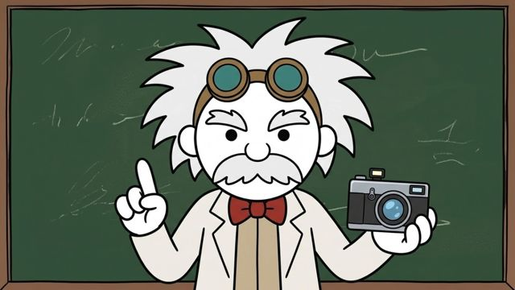
不拍，就不借。
第 2 段（S02）
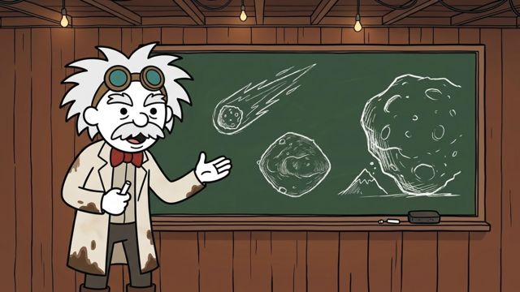
博士要你拍的，是天上那一顆所謂的「新星」。
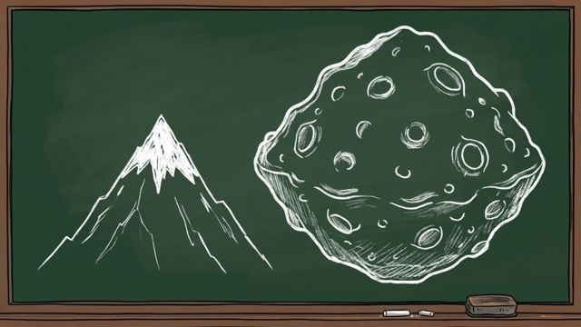
其實呢，它是一顆小行星，叫做 Chicxulub，念作「希克蘇魯伯」。它大概有十公里寬，比聖母峰還要高。
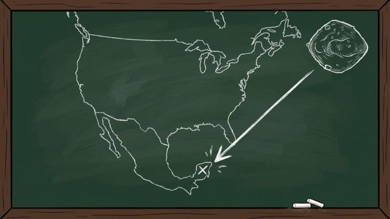
而它會斜斜地，從東北邊衝下來，撞在今天墨西哥的猶加敦半島。
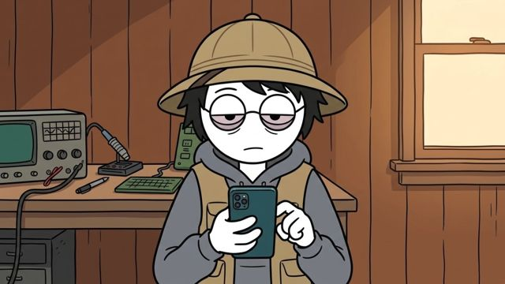
而你，只聽到兩個字：流星。拍流星，這有什麼難的。
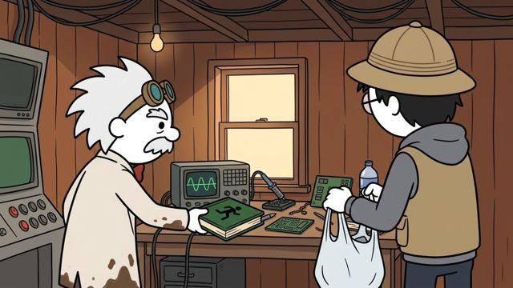
說完，博士又把那本生存指南推了過來。這一次，你倒是有把它塞進袋子裡。
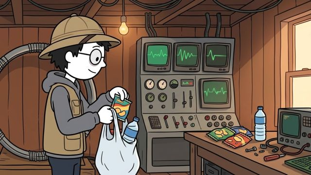
你還帶了洋芋片、食物和水。不過這些不是給你自己的，是要帶給一位老朋友。
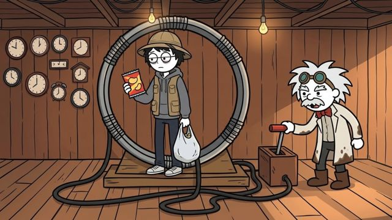
書上說，想在這次撞擊後活下來，你得帶保暖的衣服，和至少六年份的糧食。而你，帶了一袋洋芋片。
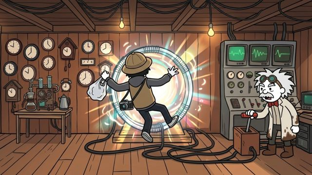
（沒有旁白）
第 3 段（S03）
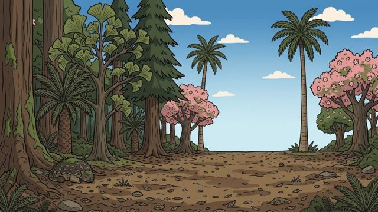
時間，回到三天後的白堊紀，還是同一片空地。這是白堊紀的最後幾天，也是最有名的那些大恐龍，活著的最後幾天。
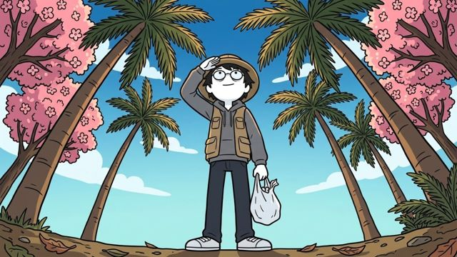
這時候的地球很暖，暖到連北極都長棕櫚樹。而且這裡，很可能剛好是春天。
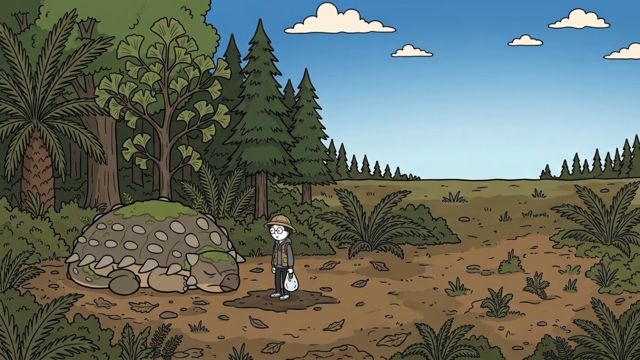
三天沒見，石頭還是一顆石頭。
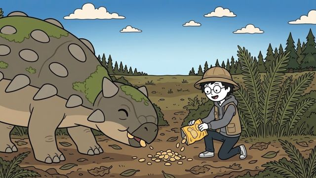
你把洋芋片倒給牠，牠吃得很開心。畢竟這是牠這輩子吃到的第二包洋芋片。
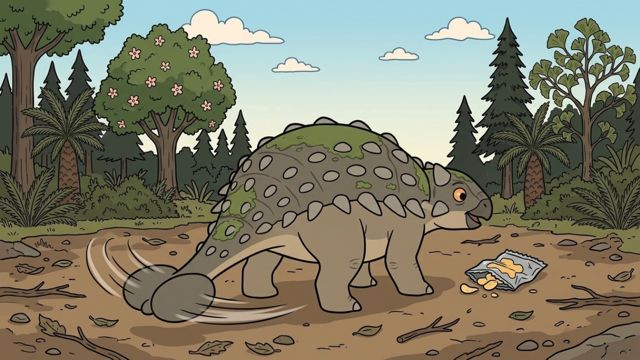
牠一開心，尾巴就甩來甩去。甲龍尾巴上那顆大錘子，就像拆房子用的大鐵球，打架的時候，能把對手砸爛。
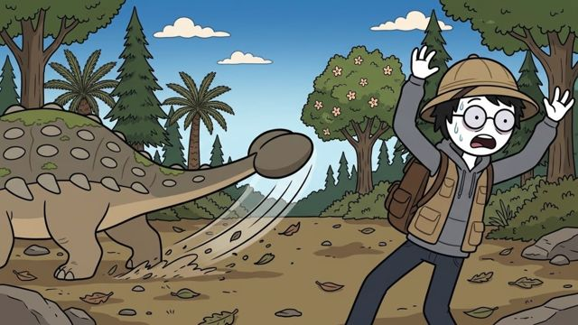
你往旁邊退了兩步。
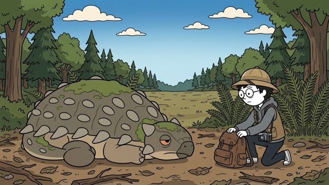
接著你把背包放在牠旁邊，只帶著相機出發。
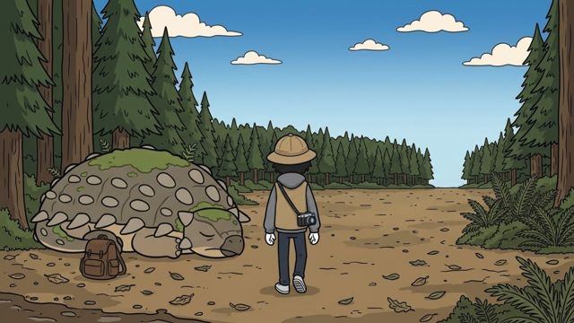
反正，拍完就回來拿嘛。
第 4 段（S04）
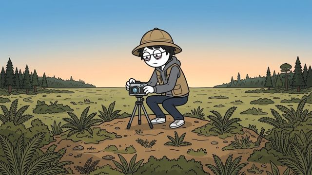
你爬上附近一塊比較高的地方，架好相機。
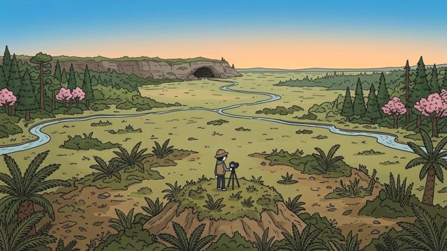
從這裡看出去，整片白堊紀都在眼前。
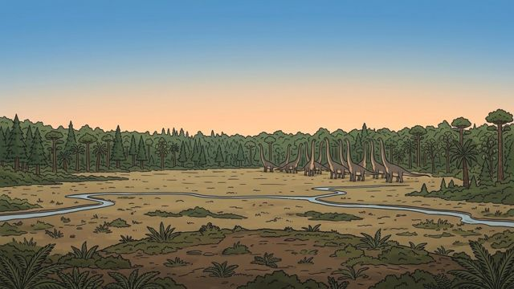
遠遠的，有一群阿拉莫龍，正把脖子伸到樹頂上吃葉子。那些葉子，離地面差不多有四層樓高。
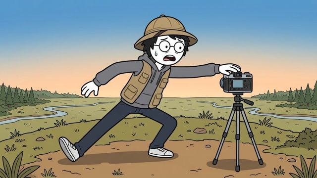
你想拍一張。往後退一步，再退一步。
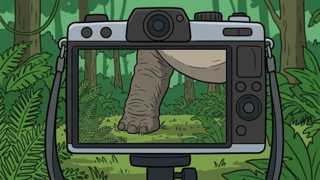
還是拍不進一整隻。
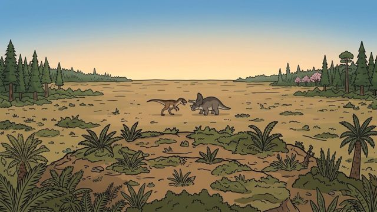
另一邊，一隻恐龍正在跟三角龍打架。
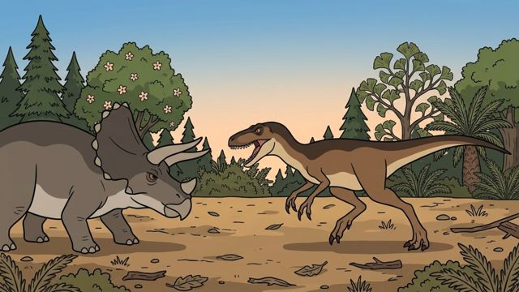
牠長得像暴龍，卻小了好幾號，腿又細又長。但牠不是小暴龍，牠叫矮暴龍，是另外一種恐龍。牠只有暴龍的十分之一重，跑得比暴龍快多了。
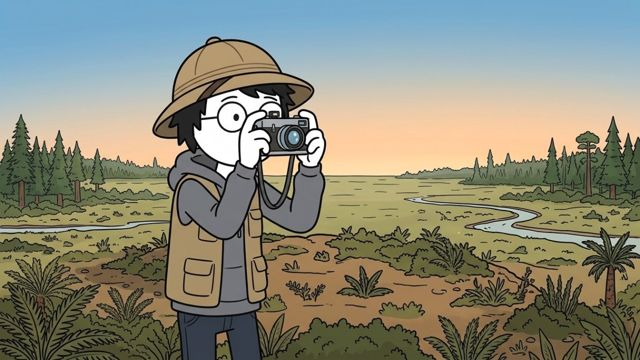
你又舉起相機。不對，博士要的是天上那一顆。
第 5 段（S05）
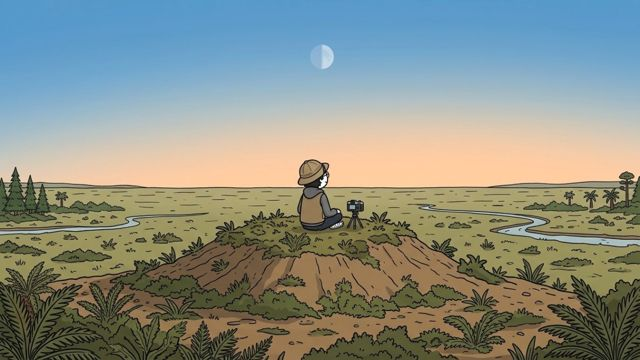
等著等著，太陽偏西了，天上掛著一個淡淡的、白天的月亮。你閒著沒事，用相機把月亮放大來看。
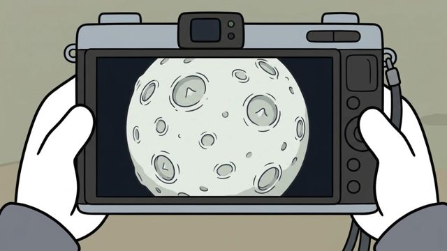
月亮上，全是一個一個圓圓的坑，有的坑中間，還有一座小山。
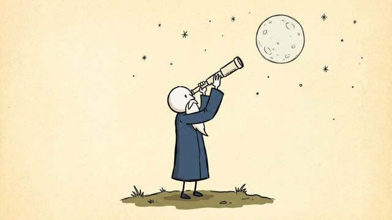
四百多年前，伽利略用望遠鏡，也看到了這些坑。
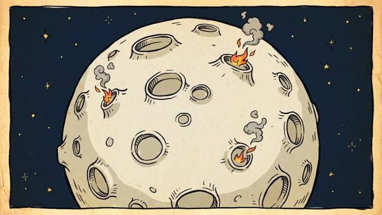
接下來的三百年，大部分的科學家都說：這些坑，是月亮上的火山口。
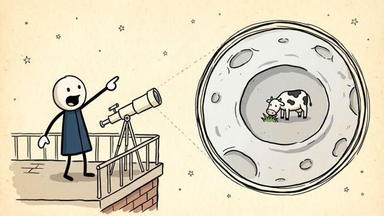
也有一位德國天文學家說，他在坑裡面，看到牛在吃月亮上的草。這一點，大家倒是都不信。
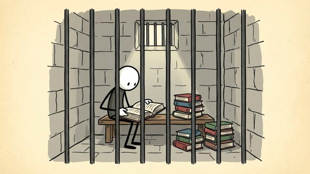
後來，有一個俄國人，叫莫洛佐夫。他坐了二十五年的牢，在牢裡自學了十一種語言。出獄以後，他開始研究天文。
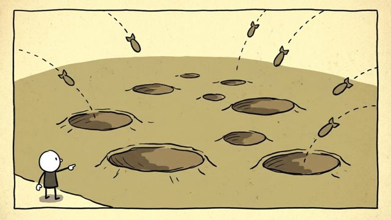
他跑去看炸彈炸出來的坑，發現不管炸彈從哪個方向飛來，炸出來的坑，都是圓的。所以月亮上那些圓圓的坑，很可能是天上的石頭撞出來的。
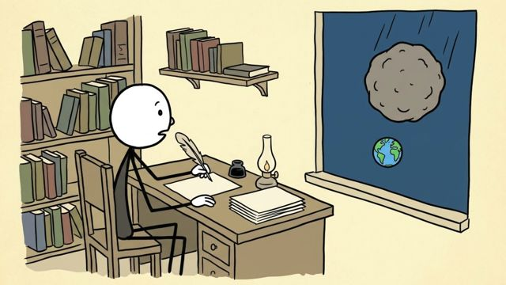
差不多同一個時候，哈佛大學的一位院長也寫過：只要一顆十六公里大的石頭掉下來，就能毀掉地球上的生命。
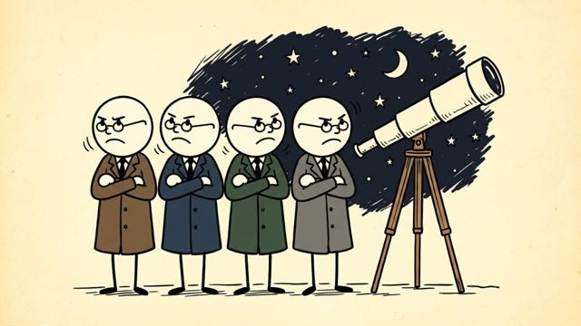
可是當時，大部分的天文學家都覺得，地球不可能被那麼大的石頭撞到。一直要到第一次世界大戰前後，大家才慢慢相信，這件事真的會發生。
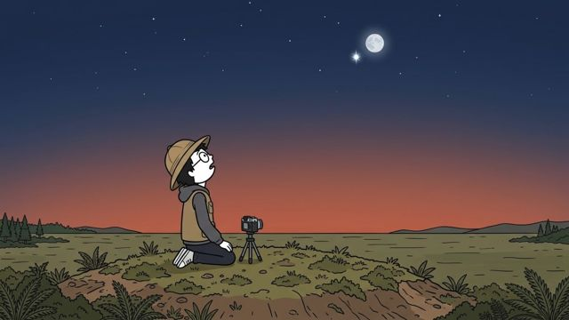
你從相機裡抬起頭。天上那顆星，又更亮了。
第 6 段（S06）
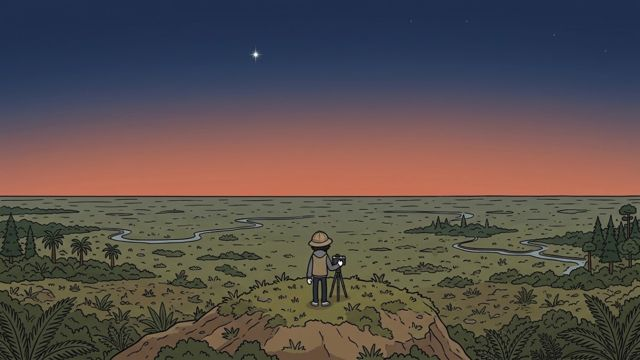
三天前，這顆星跟其他星星沒什麼兩樣。你在逃命的時候，根本沒注意到它。
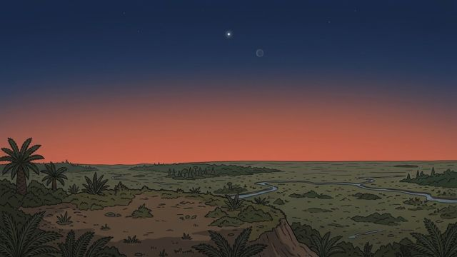
可是現在，它越來越亮。比所有的星星亮，比行星亮，比月亮還亮。
你開始覺得怪怪的：這顆流星，怎麼這麼亮？
最後，它比太陽還亮。
一般的流星，只有小石子那麼大，在天空很高的地方，就被空氣擋下來，燒掉了。可是這一顆，一秒鐘飛二十公里。對它來說，空氣就像水一樣，根本擋不住。
然後，它用幾秒鐘的時間，劃過了整片天空。你按下了快門。
欸。
它沒有飛過去。它撞上了。
第 7 段（S07）
在你看不到的地平線那一邊，發生了這些事。小行星還沒碰到地面，它前面的空氣就被壓得燙到幾千度，把底下那片淺海，烤乾了一大半。
接著，它用一秒鐘十六公里的速度，撞進了岩石。撞得太用力了，石頭不是碎掉，而是像水一樣，流開來。
就像把一顆砲彈，丟進游泳池。
先是往四面八方，濺起一圈土牆，比飛機飛得還要高。
接著，中間又彈起一根柱子，比聖母峰還高。游泳池裡，這只要幾秒鐘；在這裡，要整整十分鐘。
幾分鐘後，柱子垮了下來，只剩下一圈環狀的山。
就是你剛剛在月亮的坑中間，看到的那座小山。
而且，那裡燙得不得了。你用槌子敲釘子，敲完摸一下槌子，會是熱的。
這一撞，等於把一座山那麼重的石頭的速度，一瞬間，全部變成熱。那裡變得比太陽表面還要燙，連空氣都燒成一團大火球，往外衝。
一道衝擊波，用一小時一千六百公里的速度，往四面八方推出去。科學家說，地球上勉強能拿來比的，只有氫彈。可是這一撞，比一顆氫彈還要大上好幾千萬倍。
有些石頭，甚至被炸得飛出了地球。科學家算過，可能有幾千塊，最後掉到了火星上；還有一兩塊，飛得更遠，撞上了木星的月亮。
第 8 段（S08）
這是你這輩子，第一次那麼想看生存指南。於是你跑回去，從背包裡把它翻出來。
翻開一看，你才知道，這一顆，就是讓恐龍滅絕的那一顆。
指南上畫著一張圖：如果今天撞在同一個地方，德州的人會被炸死，紐約的人會被震聾，連阿根廷的窗戶，都會被震碎。
想活下來，最好的位置，是在地球的另一邊。
而你在的地方，正畫著一團火。
指南上寫著，接下來會發生的事。第一，地震。
第二，天上會掉下小玻璃珠。
第三，它們會把天空烤得像一台開到最強火的烤箱，森林會燒起來。
第四，一聲很大的音爆，不管你在地球的哪裡，都聽得到。
第五，不要待在水邊，會有大浪。本來，海是最好的隔熱墊，待在海邊最涼快。可是有大浪，所以很兩難。
想活下來，就快去高的地方，找一個山洞，越深越好。
寫這本指南的科學家說：要活下來，你得在對的大陸、對的地方、對的高度，還有對的時間。
第 9 段（S09）
你想了一下。關我屁事，照片拍到了，可以回家了。
於是你把指南塞回背包，正要翻出那顆按鈕。
可是石頭還想吃洋芋片，牠把頭鑽進了你的背包。
第 10 段（S10）
你在地獄溪。算一算，撞擊後大約十分鐘，
地面開始搖了。
石頭嚇了一大跳，轉身就跑。帶著你的背包。還有，你的回家按鈕。
背包勾在那顆大錘子上，甩來甩去。你想搶回來，又不太敢靠太近。
你只好追上去。
博士上課說過，越大隻的，跑得越慢。
可是你連一隻甲龍都追不上。
第 11 段（S11）
撞擊後大約十五分鐘，天上，開始下起小玻璃珠。
這些小珠子，是被撞上天的岩石，融化以後，在高空又凝固成的。它們掉回來的時候，在很高很高的地方跟空氣摩擦，一顆一顆發光發熱。等掉到地上，已經不燙了；可是幾億顆一起在天上發熱，就把整片天空，烤得像一台開到最強火的烤箱。樹林，就這樣一片一片燒了起來。不過，是不是全世界的森林都一起燒，科學家到現在還在吵。
所有的恐龍都在逃。
（沒有旁白）
（沒有旁白）
喔，那是你的帽子。
還有一隻鳥，也跟著你們一起跑。牠不會飛高，平常就住在地上。樹都燒光了，會活下來的鳥，就是牠們這種，住在地上的鳥。
大傢伙拚命跑。
小傢伙呢，一鑽就沒事了。
牠吃蟲子，會鑽進洞裡躲熱，身上還有一層毛，之後再冷都不怕。
而這個小傢伙，就是你的祖先。
第 12 段（S12）
石頭一路亂跑，竟然跑到了你在高處看到的那個大山洞。
這時候，南邊的地平線，傳來一陣低低的轟隆聲，連空氣都在震。是音爆。撞擊後大約兩個半小時，它才終於傳到地獄溪。
聲音在空氣裡，走得最慢。
你終於抓到了背包。本來，你只是想拿回背包而已。
可是最後，你卻拉著牠，一起走了進去。
這個洞，好深。深到能通到地心嗎？
你跟石頭說再見，按下按鈕。
沒反應。
你只好拍了它一下。
這一次，你總算帶著背包回家了。
第 13 段（S13）
你走了之後，地球是這樣的。一開始，是熱。
不到一個小時，好幾道比高樓還高的大浪，衝上了墨西哥灣的海岸，衝進今天的墨西哥和美國南部。
很遠的內陸，地震把河水往上游推，像一道比兩層樓還高的水牆，倒著衝回去。
更倒楣的是，撞擊的地方，底下剛好埋著很多硫，還有很多石油。
硫被炸上天，變成硫酸，接下來好幾年，像酸酸的雨一樣，一直下。
石油燒成了厚厚的黑煙，飄到比雲還高的地方，連雨都洗不掉，就像替地球漆上了一層黑漆。再加上森林燒出來的黑煙，大部分的陽光都被擋住，一擋就是好幾年。
然後，是冷。地球變得又黑又冷，平均降了快三十度。
連熱帶的島嶼，都只剩下平常一成的陽光。天氣冷，水就不太蒸發，雨少了八成，大部分的地方，都乾成了沙漠。
所以這時候，最好的去處，是靠近赤道、有山的熱帶島嶼，那裡還有一點雨，也還有乾淨的水。
最好還待在河邊。河裡有烏龜、鱷魚、魚，還有蛤蜊和蝸牛，可以撐比較久。
最後，地球上大概四分之三的生物消失了。在陸地上，比浣熊還大的哺乳動物，全部死光。恐龍，只剩下在地上築巢的鳥。
這是地球的生命史上，最重要的一刻：恐龍的時代結束了，哺乳動物的時代，開始了。
而這一天留下來的那一層土，今天在地獄溪的石頭最上面，還看得到。
對了，還記得那隻矮暴龍跟三角龍嗎？
很久很久以後，人們在地獄溪挖到一具化石：一隻矮暴龍和一隻三角龍，纏在一起，埋在同一塊石頭裡。
三角龍身上，還插著一顆矮暴龍的牙齒，所以科學家叫牠們「決鬥恐龍」。
對了，書上還說：那時候如果你肚子餓，千萬別吃那種像鼩鼱的小動物。吃錯一隻，說不定就沒有你了。
第 14 段（S14）
六千六百萬年後，科學家是怎麼知道這件事的？一九八零年，有一對科學家父子，在全世界都找得到的一層薄薄的土裡，發現很多地球上很少見的「銥」。他們說：這是一顆小行星帶來的。
可是，撞出來的坑在哪裡？
其實早在一九七八年，就有一群在墨西哥找石油的人，先找到它了。
它有一百八十公里寬。一半在陸地底下，一半在海底，還被埋在一公里厚的石頭下面，站在上面根本看不出來。只有坑的邊緣，排著一圈天然的水井。
到了一九九一年，大家才確定，就是它。二零一六年，科學家在海上鑽井，一路鑽進那圈環狀的山，把石頭拿上來看。
再化驗撞擊留下來的岩石，才知道：這顆小行星，是一種黑黑的「碳質小行星」，原本來自比木星還要遠的地方。
不過，故事還沒完。差不多同一個時候，印度也有一場超級大的火山爆發。有些科學家認為，恐龍會滅絕，它也有份。
第 15 段（S15）
回來以後，你把照片交給博士，博士開心得不得了。
當然，你也翻出了你的學生證。
至於錢嘛，博士說，這次不是打工，是借時光機的交換條件，所以，沒有錢。
不過，他送你一本書，叫《地心冒險》。